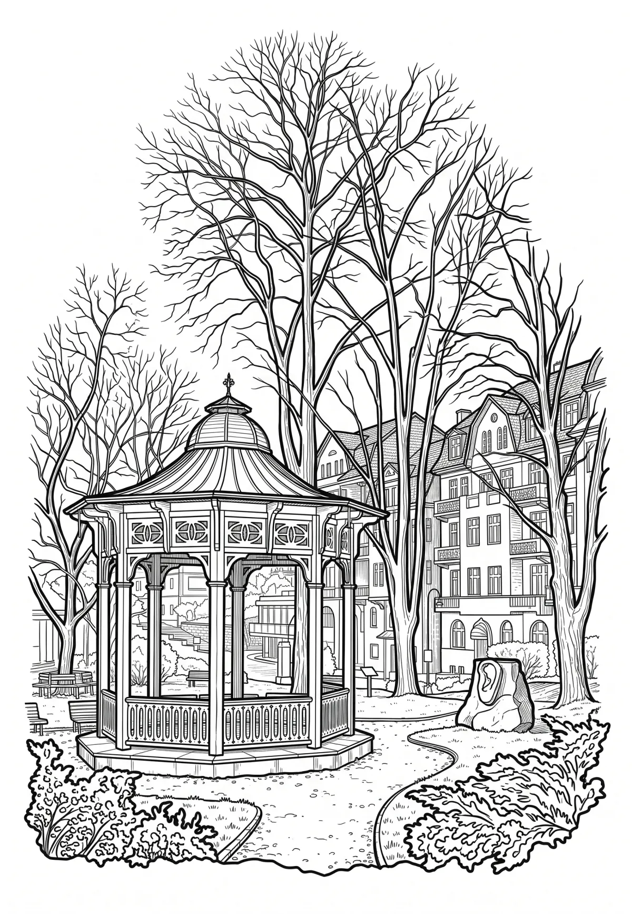

Jáchymov
Jáchymov (německy Sankt Joachimsthal) je lázeňské město v okrese Karlovy Vary v Karlovarském kraji. Leží nedaleko hranic s Německem, sedm kilometrů od hraničního přechodu Boží Dar. Žije v něm přibližně 2 300 obyvatel. Historické jádro Jáchymova z šestnáctého století je dnes městskou památkovou zónou.
Více na Wikipedii